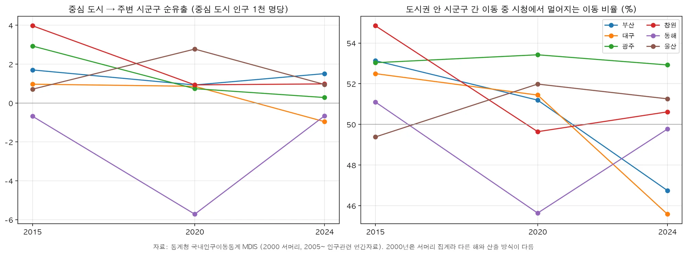
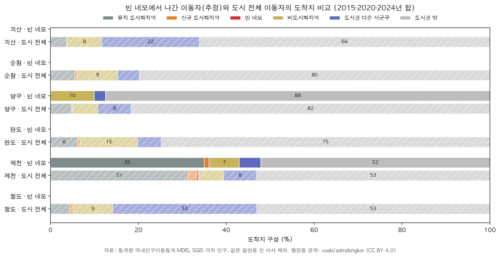

1연구 질문 및 분석 대상
분석 기간: 2015→2024년. SGIS 격자 인구가 2015년부터 등록센서스 기준으로 바뀌어, 그 전후를 잇는 증감에는 집계 기준 변경 효과가 섞인다. 같은 기준으로 비교할 수 있는 2015년을 출발점으로 삼았다(2000~2010년 값은 동적 지도와 시계열 차트에서 참고로만 제시).
분석 대상: 전국(시군구 단위 비교)과, 2015→2024 DID 인구밀도 감소율 Top 10 시군구 중 수도권(광명·의왕·성남 수정·군포)을 뺀 6곳이다. 해당 시군구가 속한 도시 전체를 확대 분석했다.
| 순위 | 시군구 | DID 밀도 변화 | 확대 분석 범위 |
|---|---|---|---|
| 3 | 대구 서구 | −18.7% | 대구광역시 (군위군 제외) |
| 5 | 부산 영도구 | −17.7% | 부산광역시 |
| 6 | 광주 남구 | −17.0% | 광주광역시 |
| 7 | 강원 동해시 | −16.8% | 동해시 |
| 9 | 창원시 마산합포구 | −16.5% | 창원시 (5개 구) |
| 10 | 울산 울주군 | −16.4% | 울산광역시 |
기간을 2000→2024에서 2015→2024로 바꾸면서 순위가 달라졌다. 이전 분석의 남원(12위)과 목포(15위)는 Top 10 밖으로 밀려났고, 동해·울산(울주군)이 새로 들어왔다. 지도에서는 순위에 든 시군구를 보라색 점선으로 표시했다.
가설: 시간에 따라 도시화 면적은 커지지만 인구밀도는 감소하며, 비효율적인 도시화가 진행 중이다.
빈집 문제 해결의 우선순위, 공공 인프라 축소의 기준 설정 등
스펀지화(sponge city) · 도시 내부에 빈 땅·빈집 같은 저이용 공간이 시간적·공간적으로 무작위하게 상당량 생기는 현상. 생산성 저하, 행정서비스 비효율, 도시 매력 저하를 부른다. 구멍을 메우고 새 구멍이 생기지 않게 하는 노력이 필요하다. 이 분석에서 “빈 네모”(2015년에는 DID였지만 2024년에는 빠진 격자)가 그 구멍에 해당한다.
2사용 자료 및 전처리 과정
| 구분 | 자료 | 내용·용도 |
|---|---|---|
| 인구 | SGIS 격자 통계(인구) 500m·1km | 2000·2005·2010·2015·2020·2024년 격자별 총인구. DID 추출의 기본 자료 |
| 경계 | SGIS 격자 경계(2025), 센서스용 시군구 경계(2025 2Q) | 격자 면적, 시군구 집계와 도시 범위 |
| 비교 | SGIS 도시화지역 경계(2015·2020·2024) | 통계청 도시·준도시 구분과 DID 비교 |
| 인구 이동 | 통계청 국내인구이동통계 MDIS 마이크로데이터 | 2015·2020·2024 인구관련 연간자료(전입·전출 읍면동, 사유, 연령) |
| 행정동 | vuski/admdongkor 행정동 경계(2016·2020·2024판) | MDIS 읍면동 코드의 위치. CC BY 4.0 |
| 공공시설 | 공공데이터포털 학교·보건기관 표준데이터, 카카오 로컬 검색 | 초·중·고(설립연도), 보건소·보건지소, 시·구·군청, 행정복지센터, 버스터미널 |
| 교통 | 국가철도공단 철도역, 국토교통부 도시철도 노선·표준노드링크, 한국도로공사 영업소 API, OpenStreetMap 철도 | 철도역·도시철도역, 고속도로 선형과 IC, 철도 선형 |
| 배경지도 | Esri World Topographic Map, World Hillshade (정적 지도), Esri Light Gray Canvas (동적 지도) | 지형·녹지 맥락(연하게) |
전처리 순서
- 격자 인구 정리 · SGIS 자료신청 원본에서 연도·해상도별 총인구(to_in_001)를 뽑아 격자 경계와 붙였다(EPSG:5179).
- DID 추출 · 인구밀도 기준(2,000 / 4,000명/km²) 이상 격자를 고르고, 변을 맞댄(rook) 격자끼리 묶어 인구 5,000명 이상인 덩어리만 DID로 남겼다(일본 국세조사 DID 방식 차용).
- 변화 구역 · 2015·2024 DID를 겹쳐 유지(둘 다 DID), 신규(2024에만), 빈 네모(2015에만)로 나눴다.
- 시설·교통 위치 · 좌표가 없는 시설은 카카오 로컬 검색(없으면 Nominatim)으로 위치를 찾고 분류명으로 걸렀다. 결과는 캐시에 저장해 재실행 때 다시 검색하지 않는다.
- 인구 이동표 · MDIS 원자료(약 2.6GB)를 압축을 풀지 않고 읽어 시군구·읍면동 OD로 집계했다. 같은 읍면동 안 이사를 빼면 연도별 합계가 공식 이동자 수와 정확히 같다(2024년 6,283,319명).
- 코드 맞추기 · 연도마다 다른 행정 코드를 2025 시군구로 맞췄다(창원 통합 전 창원·마산·진해는 창원시 하나로, 출장소는 본청으로). 읍면동은 경계 판과 MDIS 중심점으로 찾았다.
2010→2015 사이 SGIS 격자 인구 집계 기준이 바뀌었다(등록센서스 전환). 그래서 변화 분석은 2015→2024로 하고, 2000~2010 값은 시계열 차트에서 참고로만 보여 준다.
3지표의 정의, 계산식, 산출 결과
DID와 밀도
인구 이동 방향
산출 결과 · 전국 (500m 격자, 2,000명/km²)
산출 결과 · 6개 도시 (시 경계 안 DID)
| 도시 | DID 면적 2015 | 2024 | 면적 변화 | DID 밀도 2015 | 2024 | 밀도 변화 |
|---|---|---|---|---|---|---|
| 동해 | 8.5 km² | 11.2 | +32.4% | 7,427 | 6,183 | −16.8% |
| 울산 | 79.0 | 85.8 | +8.5% | 13,284 | 11,564 | −12.9% |
| 광주 | 101.5 | 109.2 | +7.6% | 14,255 | 12,649 | −11.3% |
| 창원 | 78.0 | 83.2 | +6.7% | 12,335 | 10,946 | −11.3% |
| 대구 | 152.8 | 162.5 | +6.4% | 15,512 | 13,883 | −10.5% |
| 부산 | 193.5 | 195.8 | +1.2% | 17,172 | 16,017 | −6.7% |
밀도 단위: 명/km². 대구는 2023년 편입된 군위군 제외, 창원은 5개 구 합계.
4공간 시각화 · 비공간 시각화
4-1. 전국 DID 동적 지도
500m 격자 DID. 위 버튼으로 연도(2000~2024)나 2015→2024 변화를 고르고, 밀도 기준 2,000·4,000명/km²를 함께 켜면 한 지도에 겹쳐 보인다 (변화 보기에서 두 기준을 함께 켜면 4,000 기준은 점선 테두리). 경계는 시·군 단위다(특별시·광역시·특별자치시는 하나로, 일반구가 있는 시는 시로 합침). 지역을 누르면 그 지역으로 확대되고 오른쪽 그래프가 그 지역으로 바뀐다. 그래프의 2010→2015 점선 구간은 SGIS 집계 기준 변경 구간이다. 배경지도 © Esri Light Gray Canvas (CARTO 키가 있으면 CARTO Positron).

4-2. DID 인구밀도 변화 시계열
비수도권 = 서울·경기·인천 제외. 2010→2015 사이 집계 기준이 바뀌었으므로 분석은 2015 이후 구간(2015·2020·2024)으로 한다. 세 지역 모두 면적은 늘고 밀도는 내려간다.
4-3. 인구밀도 변화 Top 10 시군구 (전국 평균 대비)
2015·2024 두 해 모두 DID가 일정 면적 이상인 시군구 중 DID 밀도 감소율이 큰 순. 점선은 전국 DID 밀도 변화율. 진한 막대(★)는 수도권 4곳을 뺀 확대 분석 대상 6곳이다.
4-4. DID 면적 증가율 Top 10 시군구 (서울·경기 제외, 전국 평균 대비)
DID 면적 증가율(%) 순위. 밀도 순위와 같이 2015·2024 두 해 모두 DID가 5km² 이상인 시군구만 비교했다(격자 몇 개로 비율이 크게 흔들리는 곳 제외). 점선은 전국 DID 면적 증가율. 막대에 마우스를 올리면 증가 면적이 보인다.
4-5. 6개 도시 DID 지도

4-6. 6개 도시 인구 이동 네트워크와 DID 제외 지역의 관계


5주요 결과 해석
도시화 면적은 커지고 인구밀도는 낮아졌다 — 가설 지지
전국 DID 면적은 2015년 2,971km²에서 2024년 3,339km²로 12.4% 늘었지만 DID 인구는 2.7% 늘어나는 데 그쳐, DID 밀도는 14,610명에서 13,357명으로 8.6% 낮아졌다. 수도권(면적 +15.4%, 밀도 −9.5%)과 비수도권(+10.1%, −8.5%) 모두 같은 방향이며, 4,000명/km² 기준(−8.0%)과 1km 격자(−7.1%)에서도 결과가 같다. 같은 인구를 더 넓은 시가지가 담는, 효율이 떨어지는 도시화가 이어지고 있다.
밀도 저하에는 두 갈래가 있다 — 넓어지며 묽어지는 곳, 그대로인데 비는 곳
6개 도시 모두 DID 면적은 1~32% 늘고 밀도는 7~17% 줄었다. 동해(면적 +32%, 밀도 −17%)가 가장 극단적이고 울산(+8.5%, −12.9%)이 뒤를 잇는다. 그런데 순위에 든 시군구를 보면 성격이 갈린다. 대구 서구·부산 영도구는 DID 면적이 그대로인데 인구가 18% 줄어든 순수한 공동화(스펀지화)이고, 동해시·울주군·마산합포구·광주 남구는 DID가 14~32% 넓어지면서 밀도가 떨어진 확장형이다. 시설 입지도 비슷하다. 학교·청사·도시철도역의 대부분은 유지 DID에 있고, 2015→2024에 새로 DID가 된 곳에 든 학교는 도시별 2~16곳뿐이다.
인구 이동 네트워크: 교외화는 2015년 이후 대부분 약해졌다
부산은 양산으로의 순유출이 꾸준하고(2015년 5,864명 → 2024년 4,447명) 2024년에는 김해가 더해졌다. 광주는 2015년 나주(빛가람 혁신도시)로 4,437명이 순유출됐지만 2024년에는 86명으로 사실상 멈췄다(인구 1천 명당 2.9 → 0.3명). 창원도 2015년 부산 강서(명지)·김해로의 유출(1천 명당 4.0명)이 2024년 김해 한 곳(1.0명)으로 줄었다. 대구는 2015년 경산 쪽 바깥 흐름에서 2024년 구미·칠곡에서 들어오는 순유입(−1.0명)으로 돌아섰고, 시청에서 멀어지는 이동 비율도 52.5%에서 45.6%로 내려갔다. 울산은 양산·기장으로의 유출이 2020년(2.8명)에 가장 컸다. 동해는 주변 교외로 빠지는 흐름이 없고 오히려 삼척에서 들어오며, 이동의 절반 가까이가 도시권 밖 먼 곳으로 향한다.
빈 네모의 사람들은 신규 DID로 “이사”하지 않았다 — 창원만 예외
빈 네모가 많은 읍면동에서 나간 이동자의 도착지는 대부분 도시 전체 이동자와 비슷하다. 대구·부산·광주·울산은 56~69%가 기존 DID의 다른 동으로 가고, 신규 DID로 간 비율은 1~6%뿐이다. 즉 시가지의 구멍은 주민이 신규 택지로 옮겨 간 결과라기보다 고령화·자연 감소·세대 축소가 기존 시가지 곳곳에서 진행된 결과로 보는 것이 맞다. 예외는 창원이다. 빈 네모 이동자는 도시권 다른 시군구(김해 등, 19.0%, 도시 전체 8.9%)와 도시권 밖(40.6%, 전체 32.1%)으로 더 많이 나가고, 시 안 유지 DID로 간 비율은 30.1%(전체 48.2%)로 낮다. 확장과 공동화가 맞교환이 아니라 따로 동시에 진행되며 평균 밀도를 끌어내린다.
혁신도시·신도시 정책을 시가화 구역과 밀도의 관점에서 다시 보면
2015→2024 비수도권 DID 면적 증가량(km²) 상위는 세종(+18.0km²), 아산, 천안 서북, 나주(빛가람 혁신도시, 2.3 → 8.5km²), 김해, 대구 달성군 같은 정책 신시가지다. 나주는 DID가 3.8배가 됐지만 밀도는 6% 떨어졌고, 김해는 18.7% 넓어지며 밀도가 10.3% 낮아졌다. 인구가 줄어드는 도시권에서는 새 시가지가 채워지는 만큼 기존 시가지의 밀도가 낮아진다. 연구 질문 2와 연결하면, 학교·청사·도시철도역 같은 기존 인프라가 남아 있는 빈 네모와 그 주변 유지 DID가 “구멍을 메우는” 재생의 우선 대상이며, 신규 확장보다 기존 시가지의 접근성을 살리는 방향이 축소 시대의 기준이 될 수 있다.
한계 · 분석 기간이 9년으로 짧다(2015 이전은 집계 기준이 달라 제외). 격자 인구의 소지역 비공개 처리, MDIS 이동자료는 2015·2020·2024 3개 연도만 사용, 빈 네모 이동자는 읍면동 단위 비례 추정, 도시 중심은 시청 한 점으로 고정했다.
출처 · 저장소
코드와 결과 표, DID 폴리곤: github.com/Seon-Cho/W8_DID-MAP. 원자료(SGIS 격자 인구, MDIS 마이크로데이터, 카카오 검색 결과)는 제공 기관 이용 조건 때문에 저장소에 올리지 않았고, 받는 방법을 README에 적었다.
자료: 통계청 SGIS 격자통계·도시화지역 경계, 통계청 국내인구이동통계(MDIS), 공공데이터포털, 국가철도공단, 국토교통부, 한국도로공사, 카카오 로컬, OpenStreetMap 기여자, vuski/admdongkor(CC BY 4.0), Esri·CARTO 배경지도.